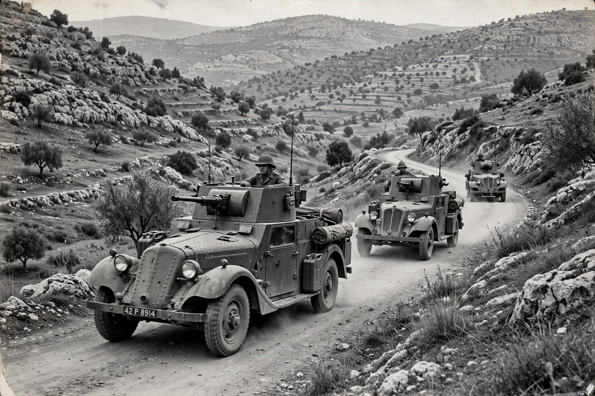

| 1948 Palestine war | |
|---|---|
 | |
| Date | 30 November 1947 – 20 July 1949 |
| Phases | Civil war (1947–48); Arab–Israeli war (1948–49) |
| Location | British Mandate of Palestine and surroundings |
| Outcome | State of Israel established; Mandate terminated; Nakba |
The 1948 Palestine war was fought in the territory of what had been, under British rule, the British Mandate for Palestine. It is known in Israel as the War of Independence and in Arabic as a central component of the Nakba. The war is divided into two main phases: a civil war between Jewish and Arab Palestinian forces from November 1947 to May 1948, and — after Israel's declaration of independence on 14 May 1948 — a conventional war between Israel and a coalition of Arab states.
Violence erupted the day after the UN General Assembly voted on 29 November 1947 to partition Palestine into Jewish and Arab states. Arab irregulars of the Army of the Holy War and the Arab Liberation Army fought the Jewish Haganah, Irgun and Lehi. From April 1948 the Haganah went on the offensive under Plan Dalet, capturing mixed cities including Haifa, Jaffa, Safed and Acre. The Deir Yassin massacre of 9 April 1948 intensified Palestinian flight.
On 15 May 1948 the armies of Egypt, Transjordan, Syria, Lebanon and Iraq intervened. The war proceeded through two UN truces and major Israeli offensives in the autumn and winter of 1948, ending with the 1949 Armistice Agreements signed on Rhodes. Israel emerged controlling roughly 78 percent of the Mandate's territory; Jordan held the West Bank and Egypt the Gaza Strip.
Between 700,000 and 750,000 Palestinian Arabs became refugees, and over 400 Palestinian villages were depopulated. Israel absorbed hundreds of thousands of Jewish immigrants and refugees in the following years. The war set the territorial and political terms of the Israeli–Palestinian conflict for decades.